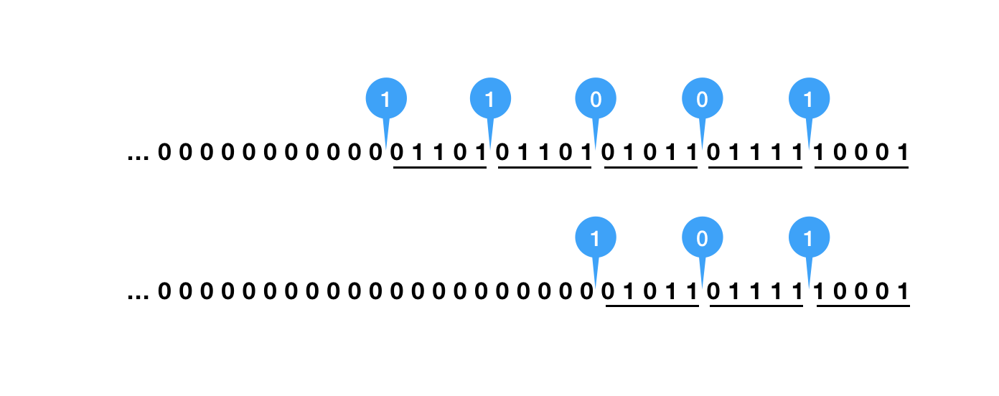

功能简单描述
功能很简单，实现将长网址缩短的功能，如：
https://javadoop.com/post/url-shortener/a/b/c/d/e/f -> https://abc.com/alsk2
为什么要转短链？因为要控制每条短信的字数，对于公司来说，短信里面的字可都是钱呀。
为什么不用 t.cn，url.cn 等短链服务呢，它们生成的链接不是更短吗？
是的，它们确实能实现更短的链接，可是要收钱的，而且这里面充满了商业数据呀。
短链服务总的来说，就做两件事：
- 将长链接变为短链接，当然是越短越好。
- 用户点击短链接的时候，实现自动跳转到原来的长链接。
长链转短链
在转短链的时候，其实就是要将一个长长的链接映射为只有 4 到 7 个字母的字符串。
这里我用了 MySQL 来存储，存放 short_key 和 original_url 的记录。
数据表很简单，最主要的列有以下几个：
- id: 逻辑主键，BIGINT
- short_key: 短链中的字符串，域名部分一般不需要加进去，加入唯一索引 UNIQUE
- original_url: 原长网址，限 256 字符
- 另外，基于业务需要，可以加入业务标识 biz、过期时间 expire_time 等。
在生成 key 的时候，一种最简单的实现方式是使用随机字符串，因为是随机码，所以可能会出现失败，通常就需要重试。随着记录越来越多，就越容易发生 key 重复的情况，这种方案显然不适合数据量大的场景。
我们不容易保证我们随机生成的 key 不重复，但是我们容易实现的就是 id 不重复，我们只要想个办法把 id 和 key 一一对应起来就可以了。
单表场景，直接使用数据库自增 id 就能实现 id 唯一。多库多表，大家肯定都有一个全局发号器来生成唯一 id。
直接将 id 放在短链上可以吗？这样就不需要使用 key 了。功能上是没有问题的，不过问题就是还是会太长，然后由于 id 通常都是基本自增的，会引发很多问题，如被别人用一个简单的脚本给遍历出来。
接下来，我们讨论怎么将 id 变为 key。
在短链中，我们通常可以使用的字符有 a-z、A-Z 和 0-9 共 62 个字符，所以，接下来，我们其实就是要将 10 进制的 id 转换为 62 进制的字符串。
转换方法很简单，大家都学过二进制和十进制之间的转换，这里贴下简单的实现：
1 | private static final String BASE = "0123456789ABCDEFGHIJKLMNOPQRSTUVWXYZabcdefghijklmnopqrstuvwxyz"; |
这样，十进制的 id 总是能生成一个唯一的 key，同样地，我们也可以通过 key 还原出 id。
在分库分表的时候，我们可以选择使用 id 来做分表键，也可以使用 key 来做分表键。如果是使用 id 的话，因为前端过来都是 key，所以需要先将 key 转换为 id。这里我们将使用 key 做分表键。
本文不会用到 62 进制转 10 进制，不过也贴出来让大家参考下吧：
1 | public static long toBase10(String input) { |
短链转长链
这一步非常简单，用户点击我们发给他们的短信中的短链，请求发送到我们的解析系统中，我们根据 key 到数据库中找原来的长链接，然后做个 302 跳转就可以了。
这里贴下 Spring MVC 的代码：
1 | ("/{key}") |
细节优化
加入随机码
62 进制用更短的字符串能表示更大的数，使得我们可以使用更少的字符，同时不会让用户直接知道我们的 id 大小，但是稍微懂一点技术的，很容易就能将 62 进制转换为 10 进制，在行家眼里，和直接使用 id 没什么区别。
下面，我们就来优化这部分。
首先，上面的代码中，我们可以打乱这个 BASE 字符串，因为如果不打乱的话，那么 62 进制中就会有 XXb = XXa + 1，如 10 进制的 999998 和 999999 转换为 62进制以后，分别为 4C90 和 4C91，大家是不是发现有点不妥。
接下来，我们可以考虑加随机字符串，如固定在开头或结尾加 2 位随机字符串，不过这样的话，就会使得我们的短链活生生地加了 2 位。
这里简单介绍下我的做法，使得生成的 key 不那么有规律，不那么容易被遍历出来。

我们得到 id 以后，先在其二进制表示的固定位置插入随机位。如上图所示，从低位开始，每 5 位后面插入一个随机位，直到高位都是 0 就不再插入。
一定要对每个 id 进行一样的处理，一开始就确定下来固定的位置，如可以每 4 位插一个随机位，也可以在固定第 10 位、第 17 位、第 xx 位等，这样才能保证算法的安全性：两个不一样的数，在固定位置都插入随机位，结果一定不一样。
由于我们会浪费掉一些位，所以最大可以表示的数会受影响，不过 64 位的 long 值是一个很大的数，是允许我们奢侈浪费一些的。
还有，前面提到高位为 0 就不再插入，那是为了不至于一开始就往高位插入了 1 导致我们刚开始的值就特别大，转换出来需要更长的字符串。
这里我贴下我的插入随机位实现：
1 | private static long insertRandomBitPer5Bits(long val) { |
这样，我们 10 进制的 999998 和 999999 就可能被转换为 16U06 和 XpJX。因为有随机位的存在，所以会有好几种可能。到这里，是不是觉得生成出来的字符串就好多了，相邻的两个数出来的两个字符串没什么规律了。
另外，建议 id 从一个中等模式的大小开始，如 100w，而不是从 1 开始，这个应该很好理解。
加入缓存
为了提高效率，我们应该使用适当的缓存，在系统中，我分别使用了一个读缓存和一个写缓存。
通常，我们使用读缓存 (key => originalUrl) 可以获得很多好处，大家想想，如果我们往一批用户的手机发送同一个短链，可能大家都是在收到短信的几分钟内打开链接的，这个时候读缓存就能大大提高读性能。
至于写请求，接口来了一个 originalUrl，我们不能去数据库中查询是否已经有这条记录，所以两条一模一样的链接我们会生成两个不一样的短链接，当然，通常我们也是允许这种情况的。
这里我指的是在分库分表的场景中，我们只能使用 key 来查找，已经不支持使用 original_url 进行数据库查找了。
由于存在短时间内使用两条一模一样的长链接拿过来转短链的情况，所以我们可以维护一个写缓存 (originalUrl => key)，这里使用 originalUrl 做键，如设置最大允许缓存最近 10000 条，过期时间 1 小时，根据自己实际情况来设置即可。这里写缓存能不能提高效率，取决于我们的业务。
由于生成短链的接口一般是提供给其他各个业务系统使用的，所以其实可以由调用方来决定是否要使用写缓存，这样能得到最好的效果。如果调用方知道自己接下来需要批量转换的长链是不会重复的，那么调用方可以设置不使用缓存，而对于一般性的场景，默认开启写缓存。
数据库大小写
这里再提最后一点，也是我自己踩的坑，有点低级失误了。一定要检查下自己的数据表是不是大小写敏感的。
在大小写不敏感的情况下，3rtX 和 3Rtx 被认为是相同的。
解决办法如下，设置列为 utf8_bin：
1 | ALTER TABLE `xxx` MODIFY `short_key` CHAR(10) CHARACTER SET utf8 COLLATE utf8_bin; |
性能分析
这个系统非常简单，性能瓶颈其实都集中在数据库中，前面我们也说了可以通过缓存来适当提高性能。
这里，我们不考虑缓存，来看下应该怎么设计数据库和表。
首先，我们应该预估一个适当的量，如按照自己的业务规模，预估接下来 2 年或更长时间，大概会增长到什么量级的数据。
如预估未来可能需要存放 50-100 亿条记录，然后我们大概按照单表 1000w 数据来设计，那么就需要 500-1000 张表，那么我们可以定 512 张表，512 张表我们可以考虑放 2 个或 4 个库。
我们使用 key 来做分表键，同时在 key 上加唯一索引，对于单表 1000w 这种级别，查询性能一般都差不了。
我没有在生产环境做过压测，测试环境中使用单库 2 张表，在不使用缓存的情况下，写操作可以比较轻松地达到 3000 TPS，基本上也就满足我们的需求了。本来测试环境各种硬件资源就和生产环境没法比，更何况我们生产环境会设置多库多表来分散压力。

![微信分享二维码]()